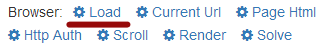

Welcome to BAS!
Start loading page by using "Load" action:

If you are new to BAS, please check out this tutorials:
Tutorial #1. Poster. Tutorial #2. Parser.
See scripts examples:
Site Visitor. QIP Regger. Proxy blacklist checker. Hideme Parser (Thanks to Turutur).
These links may also be useful: